Pletfjerning efter stof
Hvad betyder symbolerne i tøjet? Vælg dem fra mærket, og få et kort svar på dansk. Plus trin for trin mod pletter efter stoftype – uden kamera og internet.
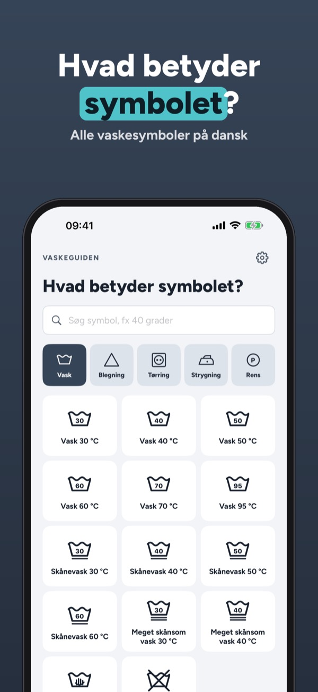
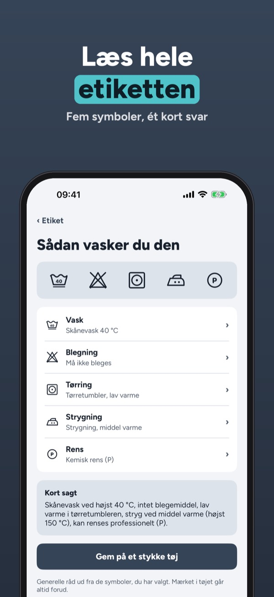
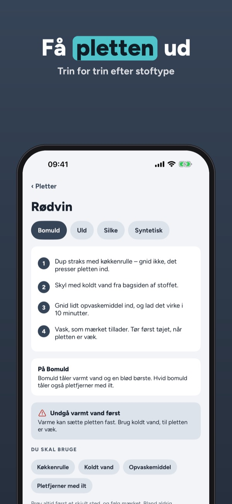
Vaskeguiden forklarer alle vaskesymboler på dansk og viser, hvordan du får pletter ud af netop dit stof.
Alle symboler, etiket-læseren og tre plet-guides kan bruges uden køb. Fuld version er et engangskøb, der låser alle plet-guides, stofguiden og Mit tøj op. Intet abonnement.
Symbolerne er tegnet af Vaskeguiden ud fra beskrivelsen i ISO 3758. Appen er ikke tilknyttet nogen tøjproducent eller mærkeordning. Følg altid mærket i tøjet.
Terms of Use (EULA): https://www.apple.com/legal/internet-services/itunes/dev/stdeula/
Privacy: https://baytechbv.github.io/privacy/vaskeguiden-nordic/
Tahranpoisto kankaan mukaan
Mitä vaatteen pesumerkit tarkoittavat? Valitse merkit lapusta ja saat lyhyen vastauksen suomeksi. Lisäksi tahranpoisto vaihe vaiheelta kankaan mukaan.
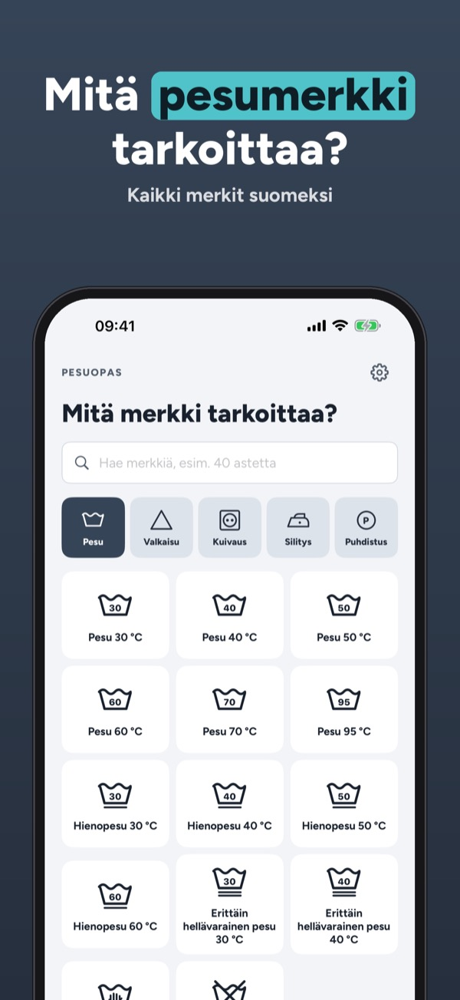
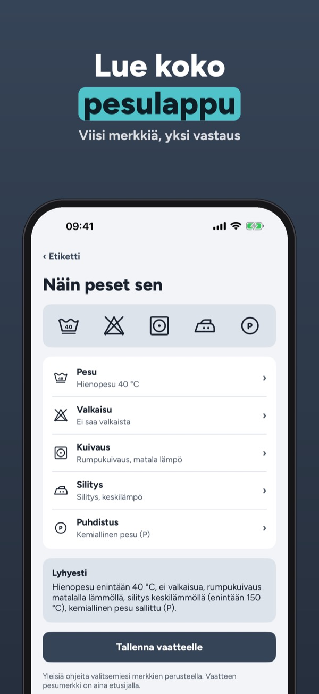
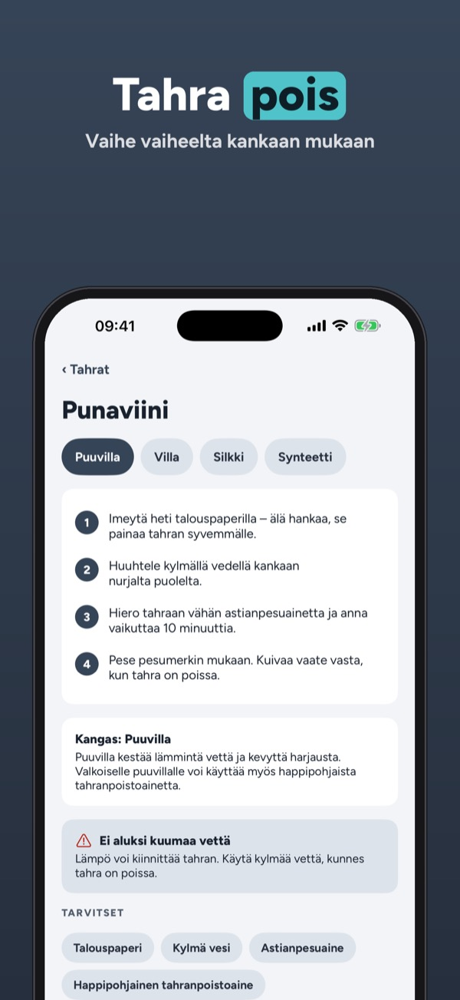
Pesuopas selittää kaikki pesumerkit suomeksi ja näyttää, miten tahra lähtee juuri sinun kankaastasi.
Kaikki merkit, pesulapun lukija ja kolme tahraohjetta ovat käytössä ilman ostoa. Täysi versio on kertaosto, joka avaa kaikki tahraohjeet, kangasoppaan ja omat vaatteet. Ei tilausta.
Merkit on piirretty itse ISO 3758 -kuvauksen pohjalta. Sovellus ei liity mihinkään vaatevalmistajaan tai merkintäjärjestelmään. Noudata aina vaatteen pesumerkkiä.
Terms of Use (EULA): https://www.apple.com/legal/internet-services/itunes/dev/stdeula/
Privacy: https://baytechbv.github.io/privacy/vaskeguiden-nordic/
Flekkfjerning etter stoff
Hva betyr symbolene i klærne? Velg dem fra merket, og få et kort svar på norsk. Pluss flekkfjerning steg for steg etter stofftype – uten kamera og nett.
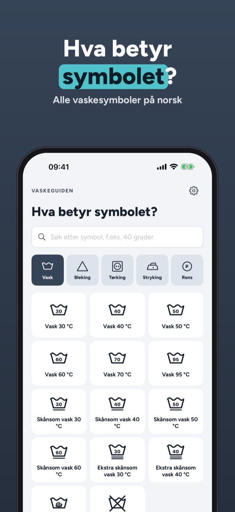
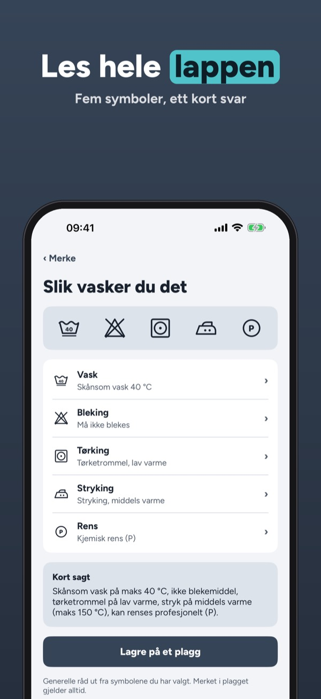
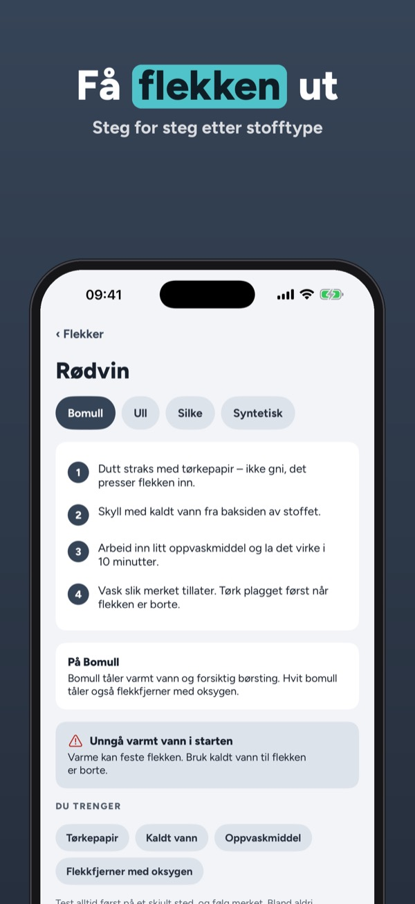
Vaskeguiden forklarer alle vaskesymboler på norsk og viser hvordan du får flekker ut av akkurat ditt stoff.
Alle symboler, lappeleseren og tre flekkguider kan brukes uten kjøp. Fullversjonen er et engangskjøp som låser opp alle flekkguider, stoffguiden og Mine klær. Ingen abonnement.
Symbolene er tegnet av Vaskeguiden ut fra beskrivelsen i ISO 3758. Appen er ikke knyttet til noen klesprodusent eller merkeordning. Følg alltid merket i klærne.
Terms of Use (EULA): https://www.apple.com/legal/internet-services/itunes/dev/stdeula/
Privacy: https://baytechbv.github.io/privacy/vaskeguiden-nordic/
Fläckborttagning efter tyg
Vad betyder symbolerna i kläderna? Välj dem från lappen och få ett kort svar på svenska. Plus fläckborttagning steg för steg efter tyg – utan kamera och nät.
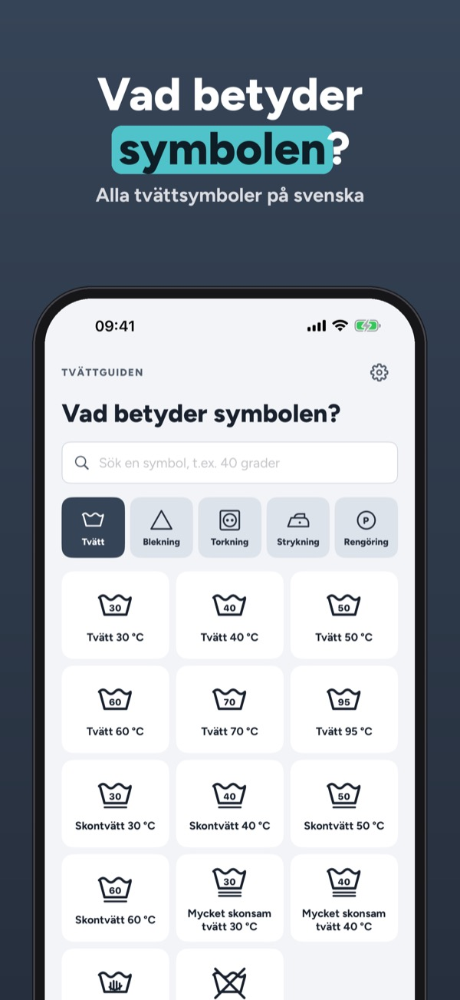
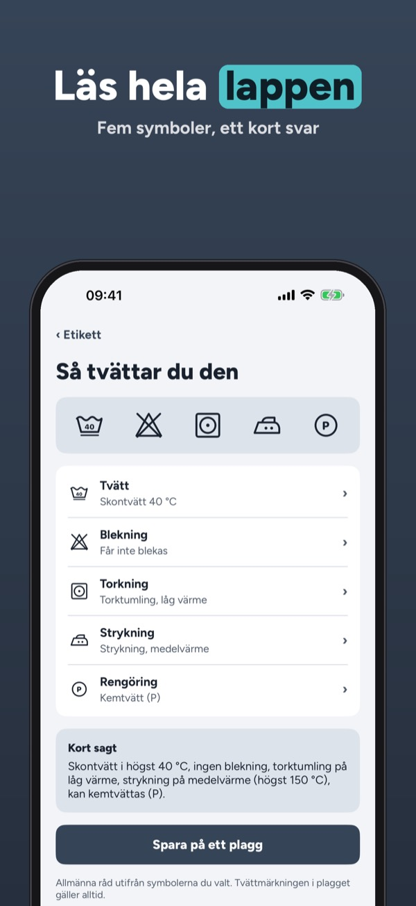
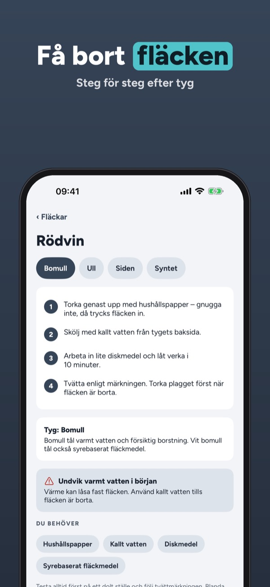
Tvättguiden förklarar alla tvättsymboler på svenska och visar hur du får bort fläckar från just ditt tyg.
Alla symboler, lappläsaren och tre fläckguider kan användas utan köp. Fullversionen är ett engångsköp som låser upp alla fläckguider, tygguiden och Mina kläder. Ingen prenumeration.
Symbolerna är ritade av oss utifrån beskrivningen i ISO 3758. Appen är inte knuten till någon klädtillverkare eller märkningsordning. Följ alltid lappen i plagget.
Terms of Use (EULA): https://www.apple.com/legal/internet-services/itunes/dev/stdeula/
Privacy: https://baytechbv.github.io/privacy/vaskeguiden-nordic/
Vlekken verwijderen per stof
Wat betekenen de symbolen in je kleding? Kies ze van het label en krijg een kort antwoord. Plus vlekken verwijderen stap voor stap per stof – zonder camera.
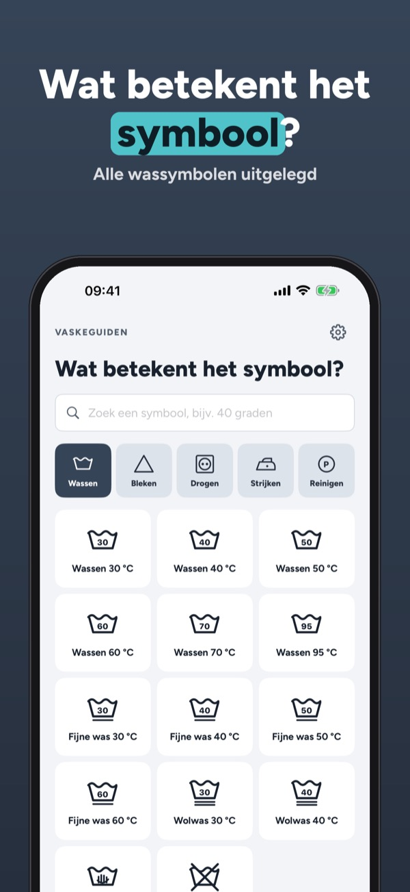
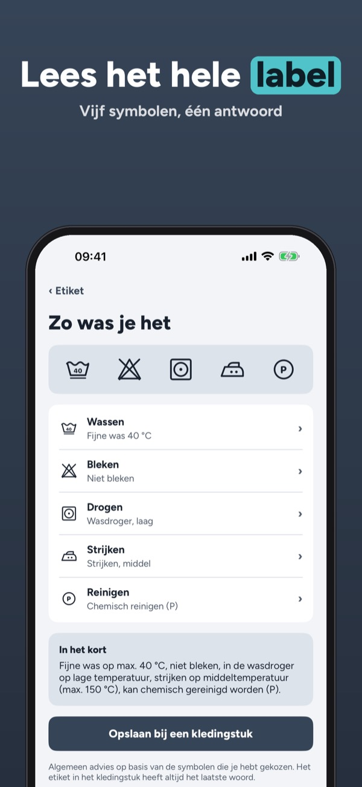
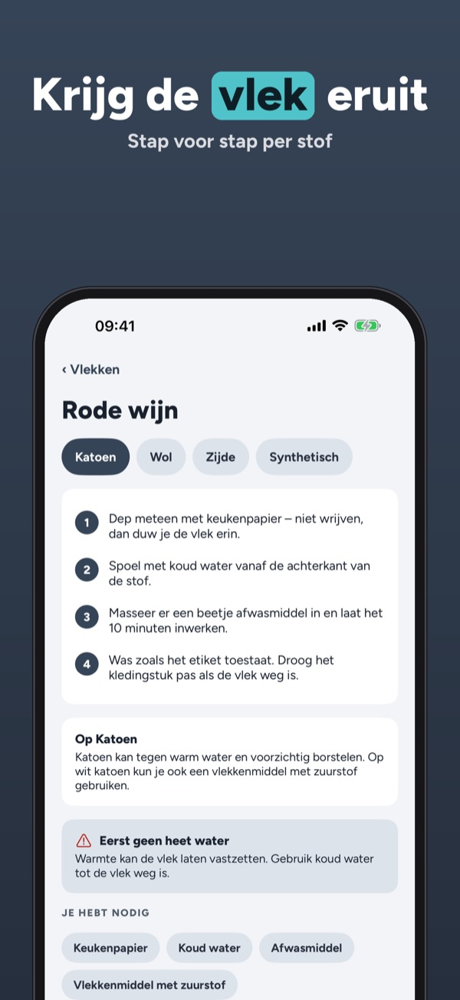
Vaskeguiden legt alle wassymbolen uit en laat zien hoe je vlekken uit precies jouw stof krijgt.
Alle symbolen, de labellezer en drie vlekkengidsen gebruik je zonder aankoop. De volledige versie is een eenmalige aankoop voor alle vlekkengidsen, de stoffengids en Mijn kleding. Geen abonnement.
De symbolen zijn door ons getekend op basis van de beschrijving in ISO 3758. De app is niet verbonden aan een kledingmerk of labelorganisatie. Volg altijd het label in je kleding.
Terms of Use (EULA): https://www.apple.com/legal/internet-services/itunes/dev/stdeula/
Privacy: https://baytechbv.github.io/privacy/vaskeguiden-nordic/
Fleckenentfernung nach Stoff
Was bedeuten die Symbole im Etikett? Wähle sie aus und erhalte eine kurze Antwort. Dazu Flecken entfernen Schritt für Schritt nach Stoff – ohne Kamera.
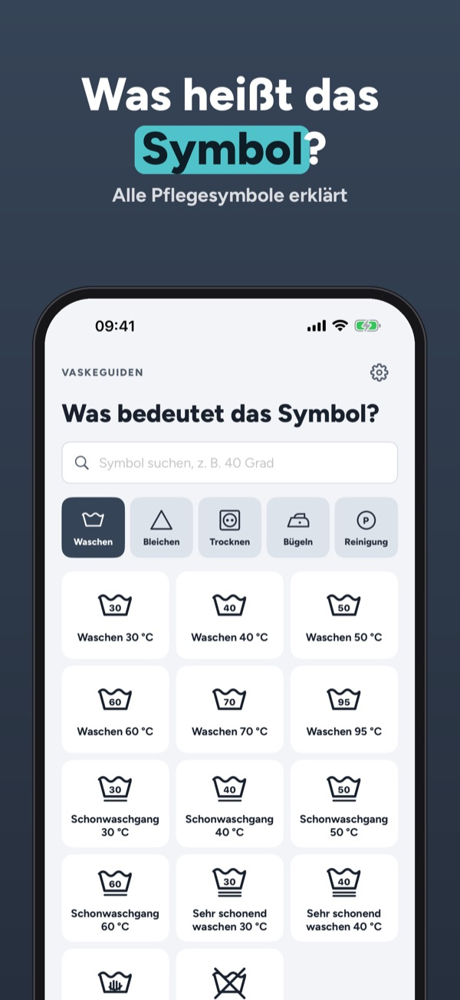
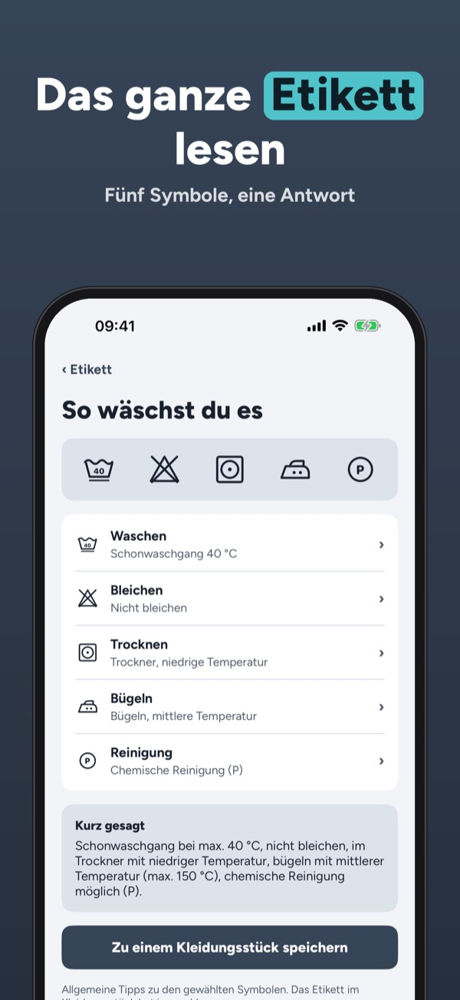
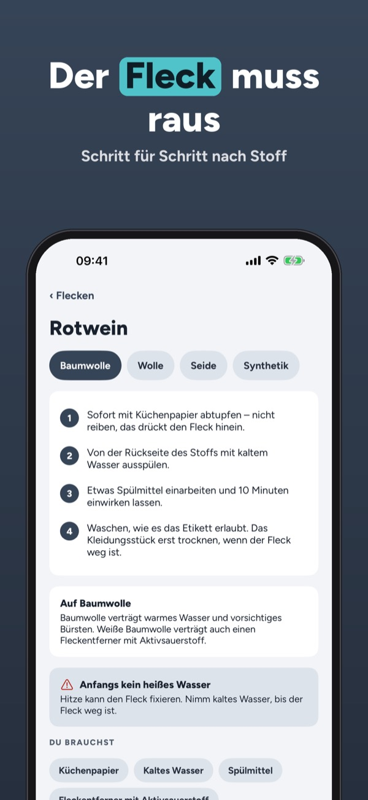
Vaskeguiden erklärt alle Pflegesymbole und zeigt, wie du Flecken aus genau deinem Stoff bekommst.
Alle Symbole, der Etikettleser und drei Fleckenratgeber sind ohne Kauf nutzbar. Die Vollversion ist ein Einmalkauf für alle Fleckenratgeber, den Stoffratgeber und Meine Kleidung. Kein Abo.
Die Symbole sind von uns nach der Beschreibung in ISO 3758 gezeichnet. Die App gehört zu keinem Kleidungshersteller und keiner Kennzeichnungsorganisation. Folge immer dem Etikett.
Terms of Use (EULA): https://www.apple.com/legal/internet-services/itunes/dev/stdeula/
Privacy: https://baytechbv.github.io/privacy/vaskeguiden-nordic/